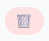

Questa pagina riporta l'inventario dei prodotti memorizzati da LiSA: prodotti inseriti manualmente, derivati da ricette oppure acquisiti dagli scontrini di spesa.

Per rimuovere un prodotto usa l'icona del cestino disponibile nella gestione prodotti.
La rimozione di un prodotto puo influenzare i suggerimenti automatici: mentre scrivi nell'area interattiva, LiSA propone i prodotti che gia conosce per rendere piu rapida la compilazione.
Puo inoltre incidere sulle statistiche e sulle indicazioni legate alla gestione economica degli scontrini, perche quei prodotti vengono usati anche come riferimento negli archivi interni.
Consiglio pratico: elimina in modo graduale e solo quando sei sicuro che la voce sia sbagliata o non piu utile.
La gestione prodotti fa parte della sezione archivi richiamabile da Impostazioni.